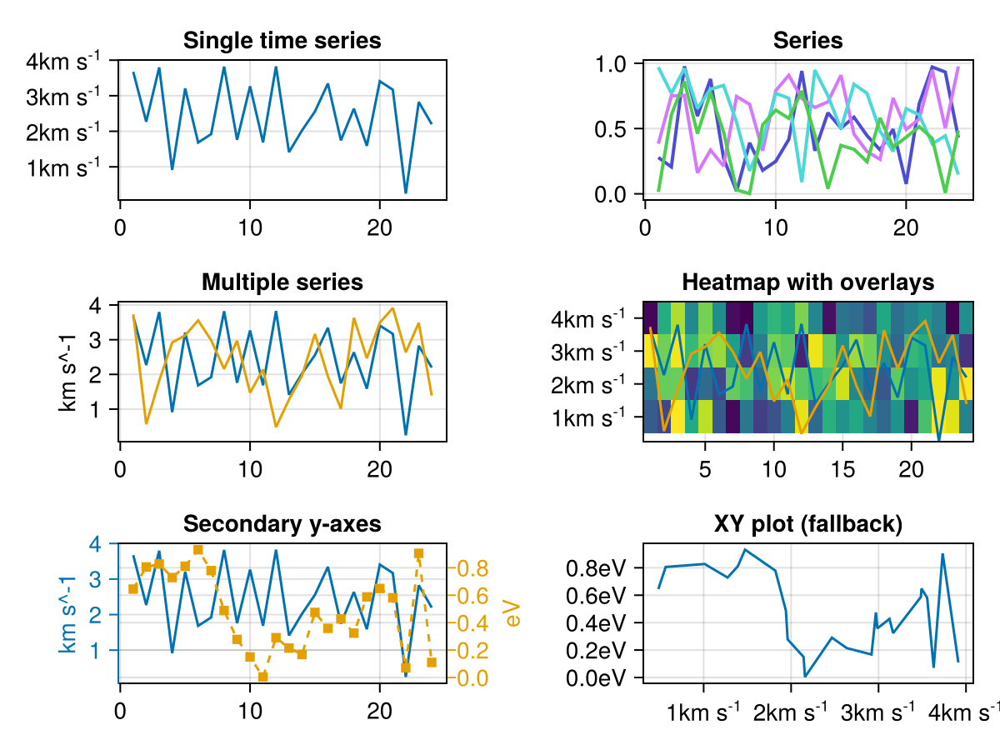
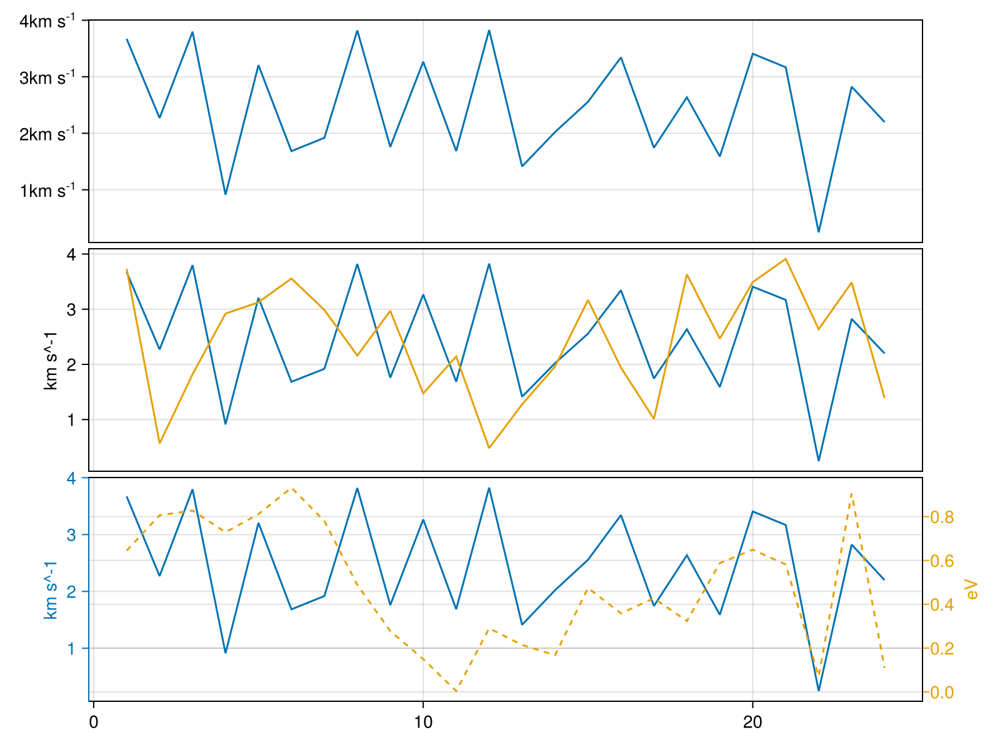

SpacePhysicsMakie.jl


SpacePhysicsMakie.jl provides a set of utilities for visualizing space physics data:
tplot_panel: Creates single panel plots with support for multiple data typestplot: Combines multiple panels into a figure
tplot_panel handles various time series formats including vectors, matrices, functions. It renders data as line plots, series plots, spectrograms and overlaid plots.
tplot offers flexible visualization options, allowing you to display multiple time series either across separate panels.
SpacePhysicsMakie integrates with many packages in the space physics ecosystem through a common API defined in SpaceDataModel.jl. See real world example of using Speasy.jl to retrieve and visualize data. More demos are available in the Examples page.
Built on Makie's complex layouts capabilities, tplot provides both interactive exploration capabilities and publication-quality output. It features dynamic data loading during zoom/pan operations, efficiently retrieving and rendering data on demand.
SpacePhysicsMakie.tplot — Function
tplot(f, tas; legend=(; position=Right()), link_xaxes=true, link_yaxes=false, rowgap=5, kwargs...)Lay out multiple time series across different panels (rows) on the Figure / GridPosition f
If legend is nothing, no legend will be added to the plot. Otherwise, legend can be a NamedTuple containing options for legend placement and styling. By default, the time series are transformed via extensible transform.
See also: tplot_panel, transform
tplot([f,] ds::Dataset, t0, t1; vars = data_variables(getdata(ds, t0, t1)), kwargs...)One panel per variable of ds; the panels share each fetch.
SpacePhysicsMakie.tplot_panel — Function
tplot_panel(gp, args...; kwargs...)Generic entry point for plotting different types of data on a grid position gp.
Transforms the arguments to appropriate types and calls the plotting function. Dispatches to appropriate implementation based on the plotting trait of the transformed arguments.
SpacePhysicsMakie.tplot_panel! — Function
tplot_panel!(ax, args...; kwargs...)Generic entry point for adding plots to an existing axis ax.
Transforms the arguments to appropriate types and calls the plotting function. Dispatches to appropriate implementation based on the plotting trait of the transformed arguments.
Installation
using Pkg
Pkg.add("SpacePhysicsMakie")Flexible tplot_panel
using Unitful
using CairoMakie, SpacePhysicsMakie
# Create sample data
n = 24
data1 = rand(n) * 4u"km/s" # Vector with units
data2 = rand(n) * 4u"km/s" # Same units
data3 = rand(n) * 1u"eV" # Different units
data4 = rand(n,4) # Matrix (for heatmap)
f = Figure()
# Basic Plotting
tplot_panel(f[1, 1], data1; axis=(;title="Single time series"))
# Multiple Series (same y-axis)
tplot_panel(f[2, 1], [data1, data2]; axis=(;title="Multiple series"), plottypes=Lines)
# Secondary Y-Axes for different units with different plot types
tplot_panel(f[3, 1], (data1, data3); axis=(;title="Secondary y-axes"), plottypes=(Lines, ScatterLines))
# Combine with plain `Makie` plots to plot matrix as `series`
series(f[1, 2], data4'; axis=(;title="Series"))
# Overlay Series on Heatmap
tplot_panel(f[2, 2], [data4, data1, data2]; axis=(;title="Heatmap with overlays"))
# XY Plot (non-time series)
tplot_panel(f[3, 2], sort(data2), data3; axis=(;title="XY plot (fallback)"))
f
Composable tplot
You can also combine multiple panels into a single figure using tplot. By default, it links the x-axis of each panel and layouts the panels in a single column.
tvars = [
data1,
[data1, data2],
(data1, data3),
]
tplot(tvars)
tplot also supports plotting on GridPosition and GridSubposition objects
Function as tplot argument for interactive exploration
tplot can handle functions that accept time intervals as arguments. This allows for creating interactive plots where data is dynamically fetched. So instead of the two-step process:
- Fetch data:
da = f(t0, t1) - Plot data:
tplot(da)
We can combine these steps into a single command:
tplot(f, t0, t1)
This approach enables efficient interactive exploration of time series.
For real-time interactivity, consider using the GLMakie backend instead of CairoMakie although it is possible to use tlims! or xlims! to update the plot dynamically.
Data Transformation
Before plotting, data goes through a transformation pipeline to ensure it's in a plottable format (e.g., DimArray).
SpacePhysicsMakie.transform — Function
transform(args...; kwargs...)Transform data into plottable format (e.g., DimArray).
Extend with transform(x::MyType) for custom types.
You can extend the transformation system by defining methods for your types:
transform(x::MyType) = DimArray(x.data)API
SpacePhysicsMakie.DEFAULTSSpacePhysicsMakie.DataSourceSpacePhysicsMakie.DebouncerSpacePhysicsMakie.DrawableSpacePhysicsMakie.FunctionPlotSpacePhysicsMakie.MultiAxisDataSpacePhysicsMakie.MultiPlottableSpacePhysicsMakie.SpecPlotSpacePhysicsMakie.SupportTypesSpacePhysicsMakie._intersectSpacePhysicsMakie._linear_binedgesSpacePhysicsMakie.add_labels!SpacePhysicsMakie.add_labels!SpacePhysicsMakie.add_legend!SpacePhysicsMakie.add_legend!SpacePhysicsMakie.auto_figure_sizeSpacePhysicsMakie.axis_attributesSpacePhysicsMakie.binedgesSpacePhysicsMakie.centers_or_edgesSpacePhysicsMakie.clabelSpacePhysicsMakie.data_variablesSpacePhysicsMakie.default_orientationSpacePhysicsMakie.functionplotSpacePhysicsMakie.functionplotSpacePhysicsMakie.functionplot!SpacePhysicsMakie.functionplot!SpacePhysicsMakie.hastimedimSpacePhysicsMakie.heatmap_attributesSpacePhysicsMakie.isspectrogramSpacePhysicsMakie.iviz_api!SpacePhysicsMakie.labelsSpacePhysicsMakie.linesplotSpacePhysicsMakie.make_secondary_axisSpacePhysicsMakie.multiaxisplotSpacePhysicsMakie.multiaxisplotSpacePhysicsMakie.multiplotSpacePhysicsMakie.multiplot!SpacePhysicsMakie.plotfuncSpacePhysicsMakie.plotfunc!SpacePhysicsMakie.resampleSpacePhysicsMakie.specplotSpacePhysicsMakie.specplotSpacePhysicsMakie.specplot!SpacePhysicsMakie.specplot!SpacePhysicsMakie.tlims!SpacePhysicsMakie.tlines!SpacePhysicsMakie.tplotSpacePhysicsMakie.tplotSpacePhysicsMakie.tplotSpacePhysicsMakie.tplot_panelSpacePhysicsMakie.tplot_panelSpacePhysicsMakie.tplot_panel!SpacePhysicsMakie.tplot_panel!SpacePhysicsMakie.transformSpacePhysicsMakie.transformSpacePhysicsMakie.tvspan!SpacePhysicsMakie.x2t
SpacePhysicsMakie.DEFAULTS — Constant
DEFAULTSPackage settings. Mutate fields to change them globally; the SpacePhysicsMakie theme key takes precedence, e.g. with_theme(SpacePhysicsMakie = (; add_title = true)) do ... end.
add_title: use the description metadata as the axis titleadd_colorbar: add a colorbar to spectrogram panelsdelay: idle seconds before an interactive panel refetchesresample: number of points long series are resampled toposition: legend and colorbar placementvector_plottype: Makie plot type for plain vectors
SpacePhysicsMakie.DataSource — Type
Lazy sources, materialized by getdata(x, t0, t1).
SpacePhysicsMakie.Drawable — Type
Union type for drawable containers that can hold plots
SpacePhysicsMakie.MultiPlottable — Type
Union type for data that can be plotted as multiple series
SpacePhysicsMakie.SupportTypes — Type
Union type for data types supported by the plotting system
SpacePhysicsMakie.Debouncer — Type
DebouncerA struct that creates a debounced version of a function f.
The debounced function will only execute after a specified delay (in seconds) of inactivity. If called again before the delay expires, the timer resets.
SpacePhysicsMakie.FunctionPlot — Type
FunctionPlot is the plot type associated with plotting function functionplot. Check the docstring for functionplot for further information.
SpacePhysicsMakie.MultiAxisData — Type
MultiAxisData(primary, secondaries...; metadata=nothing)A type for handling multiple y-axes where the first element is the primary axis (left) and subsequent elements are secondary axes (right side, with increasing padding).
Fields
primary: Data for the primary (left) y-axissecondaries: Tuple of data for secondary (right) y-axesmetadata: Optional metadata (e.g., title)
Example
# Three axes: one primary, two secondary
data = MultiAxisData(y1_data, y2_data, y3_data)
tplot(data)SpacePhysicsMakie.SpecPlot — Type
SpecPlot is the plot type associated with plotting function specplot. Check the docstring for specplot for further information.
SpacePhysicsMakie._intersect — Method
_intersect(d, itr...)Find common key-value pairs across multiple dictionaries dicts. Only includes pairs where the key exists in all dictionaries with the same value.
SpacePhysicsMakie._linear_binedges — Method
_linear_binedges(centers)Calculate bin edges assuming linear spacing.
SpacePhysicsMakie.add_labels! — Function
Add labels to a figure, automatically searching for blocks to label.
Notes
- https://github.com/brendanjohnharris/Foresight.jl/blob/main/src/Layouts.jl#L2
SpacePhysicsMakie.add_labels! — Method
Add labels to a grid of layouts
Notes
- See
tag_facetineggfor reference
SpacePhysicsMakie.add_legend! — Method
Only add legend when the axis contains multiple labels
SpacePhysicsMakie.add_legend! — Method
Only add legend when the axis contains multiple labels
SpacePhysicsMakie.auto_figure_size — Method
auto_figure_size(tas)Calculate an appropriate figure size based on the number of plots in the list. Returns a tuple of (width, height) in pixels.
SpacePhysicsMakie.axis_attributes — Method
Get axis attributes for x
SpacePhysicsMakie.binedges — Method
binedges(centers; transform=identity)Calculate bin edges from bin centers.
- For linear spacing, edges are placed halfway between centers.
- For transformed spacing, edges are placed halfway between transformed centers.
Arguments
transform: Function to transform the space (e.g., log for logarithmic spacing)
Example
centers = [1.0, 2.0, 3.0]
edges = binedges(centers) # Returns [0.5, 1.5, 2.5, 3.5]
edges = binedges(centers, transform=log) # Returns edges in log spaceSpacePhysicsMakie.centers_or_edges — Method
centers_or_edges(x; transform=identity)Get a compatible bin edges or centers for plotting with transform
Reference: Makie.edges
SpacePhysicsMakie.clabel — Method
clabel(A; multiline=true, schema=get_schema(A))Get the colorbar label for data using the metadata schema.
SpacePhysicsMakie.data_variables — Method
data_variables(data)Keys of data worth a panel: time series of rank ≤ 2, excluding ISTP support data and metadata.
SpacePhysicsMakie.default_orientation — Method
Get the default orientation for a legend based on the position
SpacePhysicsMakie.functionplot — Function
No docstring defined.
Plot type
The plot type alias for the functionplot function is FunctionPlot.
Attributes
plotfunc = tplot_panel! — No docs available.
SpacePhysicsMakie.functionplot! — Function
functionplot! is the mutating variant of plotting function functionplot. Check the docstring for functionplot for further information.
SpacePhysicsMakie.functionplot! — Method
functionplot!(ax, f, tmin, tmax; kwargs...)Interactive plot of a function f on ax for a time range from tmin to tmax
SpacePhysicsMakie.functionplot — Method
functionplot(gp, f, tmin, tmax; kwargs...)Interactively plot a source f (see DataSource) over a time range on a grid position
SpacePhysicsMakie.hastimedim — Method
hastimedim(x)Whether x has a time coordinate (SpaceDataModel's times and tdimnum); without one, its first axis is drawn as an index.
SpacePhysicsMakie.heatmap_attributes — Method
heatmap_attributes(A; kwargs...)Extract heatmap attributes from metadata using the schema-based approach.
SpacePhysicsMakie.isspectrogram — Method
isspectrogram(A::AbstractMatrix; threshold=8, schema=get_schema(A))Determine if data should be plotted as a spectrogram using the metadata schema.
SpacePhysicsMakie.iviz_api! — Method
Plot f over trange on ax, refetching when the view leaves the loaded range.
SpacePhysicsMakie.labels — Method
labels(x; schema=get_schema(x))Get the labels for data using the metadata schema.
SpacePhysicsMakie.linesplot — Method
linesplot(gp, ta)Plot a multivariate time series on a panel
SpacePhysicsMakie.make_secondary_axis — Method
Create and configure a secondary y-axis
SpacePhysicsMakie.multiaxisplot — Method
Create figure automatically
SpacePhysicsMakie.multiaxisplot — Method
multiaxisplot(gp, primary, secondaries...; pad_increment = 50.0, [colors, styles, plottypes, axis], kwargs...)Create a plot with one primary y-axis (left) for primary and multiple secondary y-axes (right) for secondaries....
Each secondary axis is offset to the right with increasing padding of pad_increment to avoid overlap.
Attributes
colors: Vector of colors for each axis (default: Wong color palette)styles: Vector of NamedTuples with plot attributes for each secondary axisplottypes: Plot types to use, a single type would be broadcasted to all axes
SpacePhysicsMakie.multiplot! — Method
multiplot!(ax, fs, tmin, tmax; kwargs...)Overlay several sources on ax, fetched together so they refetch together on zoom.
SpacePhysicsMakie.multiplot — Method
multiplot(gp, tas::MultiPlottable, args...; axis=(;), kwargs...)Setup the panel on a position and plot multiple time series on it
SpacePhysicsMakie.plotfunc — Function
Determine the plotting function for a given data type. Extend this for custom data types to integrate with the plotting system.
SpacePhysicsMakie.plotfunc! — Function
Determine the plotting function for a given data type. Extend this for custom data types to integrate with the plotting system.
SpacePhysicsMakie.resample — Method
resample(arr; n=setting(:resample), dim=1, verbose=false)Resample an array along the dimension dim to n points. If the original length is less than or equal to n, the original array is returned unchanged.
SpacePhysicsMakie.specplot — Function
No docstring defined.
Plot type
The plot type alias for the specplot function is SpecPlot.
Attributes
SpacePhysicsMakie.specplot! — Function
specplot! is the mutating variant of plotting function specplot. Check the docstring for specplot for further information.
SpacePhysicsMakie.specplot! — Method
Plot heatmap of a time series on the same axis
SpacePhysicsMakie.specplot — Method
specplot(gp, ta)Plot a spectrogram on a panel
SpacePhysicsMakie.tlims! — Method
tlims!(ax, tmin, tmax)
tlims!(tmin, tmax)
tlims!(trange)Set axis limits, handling different time formats. Supports DateTime, Unitful, and numeric time values.
SpacePhysicsMakie.tlines! — Method
Add vertical lines at time to a plot
SpacePhysicsMakie.tplot — Method
tplot(f, tas; legend=(; position=Right()), link_xaxes=true, link_yaxes=false, rowgap=5, kwargs...)Lay out multiple time series across different panels (rows) on the Figure / GridPosition f
If legend is nothing, no legend will be added to the plot. Otherwise, legend can be a NamedTuple containing options for legend placement and styling. By default, the time series are transformed via extensible transform.
See also: tplot_panel, transform
SpacePhysicsMakie.tplot — Method
tplot([f,] ds::Dataset, t0, t1; vars = data_variables(getdata(ds, t0, t1)), kwargs...)One panel per variable of ds; the panels share each fetch.
SpacePhysicsMakie.tplot_panel! — Method
tplot_panel!(ax, args...; kwargs...)Generic entry point for adding plots to an existing axis ax.
Transforms the arguments to appropriate types and calls the plotting function. Dispatches to appropriate implementation based on the plotting trait of the transformed arguments.
SpacePhysicsMakie.tplot_panel — Method
tplot_panel(gp, args...; kwargs...)Generic entry point for plotting different types of data on a grid position gp.
Transforms the arguments to appropriate types and calls the plotting function. Dispatches to appropriate implementation based on the plotting trait of the transformed arguments.
SpacePhysicsMakie.transform — Method
transform(args...; kwargs...)Transform data into plottable format (e.g., DimArray).
Extend with transform(x::MyType) for custom types.
SpacePhysicsMakie.tvspan! — Method
Add vertical bands spanning tmins to tmaxs to a plot
SpacePhysicsMakie.x2t — Method
Convert x to DateTime
Reference:
- https://docs.makie.org/dev/explanations/dim-converts#Makie.DateTimeConversion
- https://github.com/MakieOrg/Makie.jl/issues/442
- https://github.com/MakieOrg/Makie.jl/blob/master/src/dim-converts/dates-integration.jl